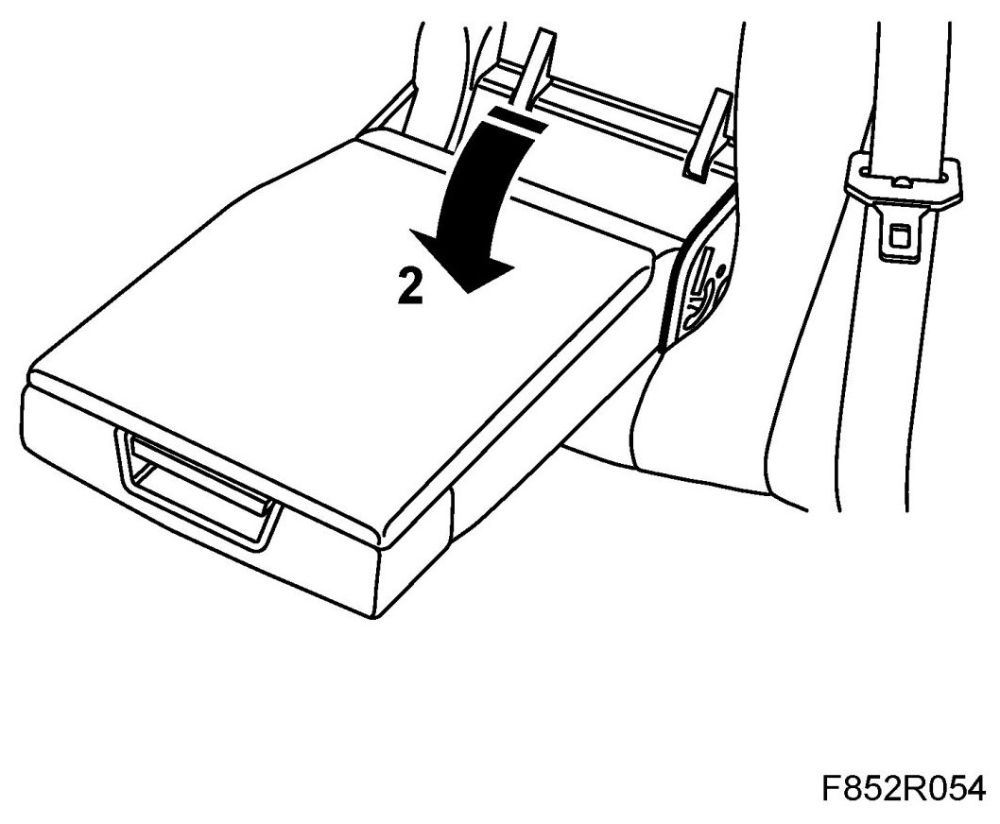
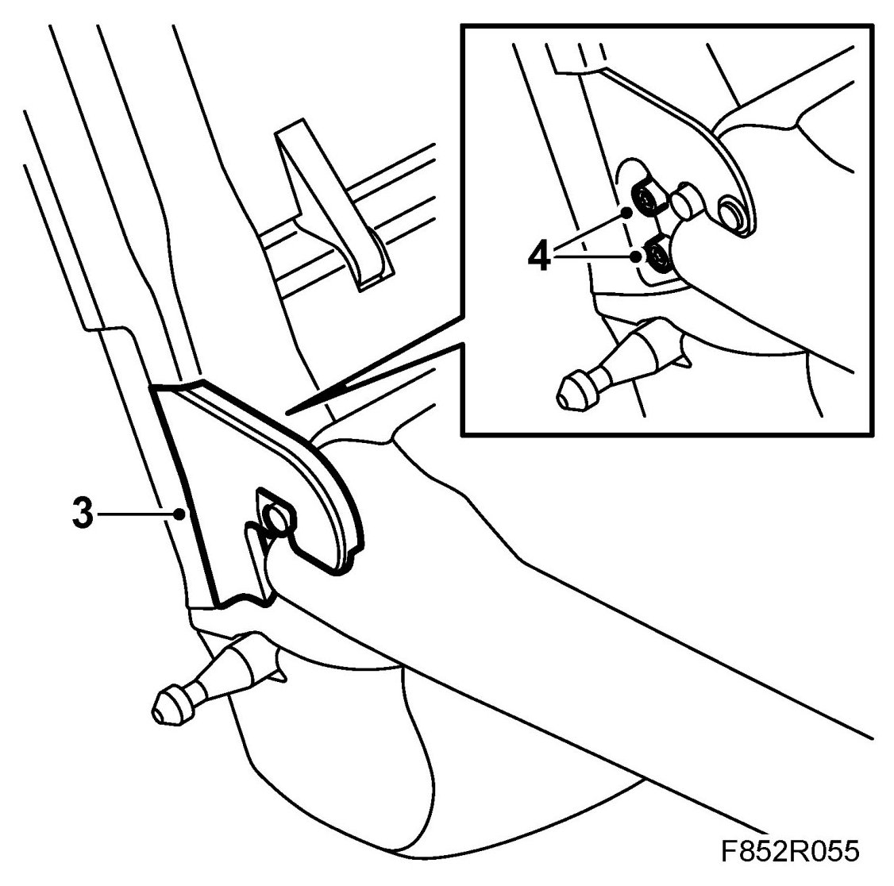
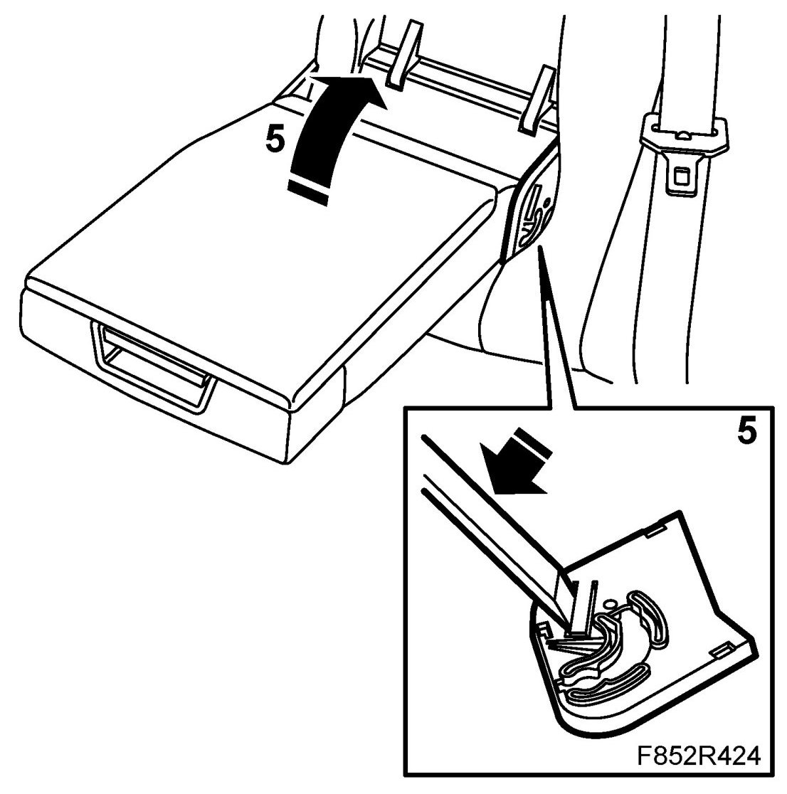
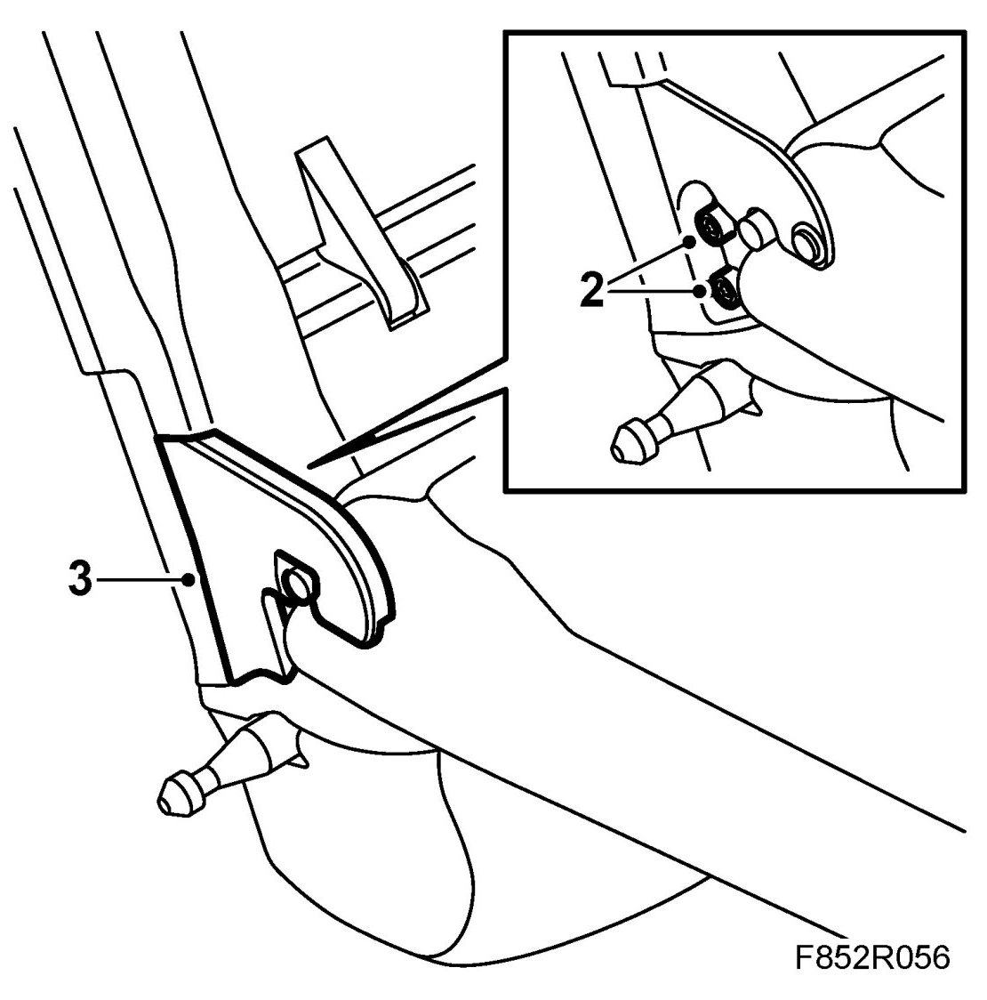
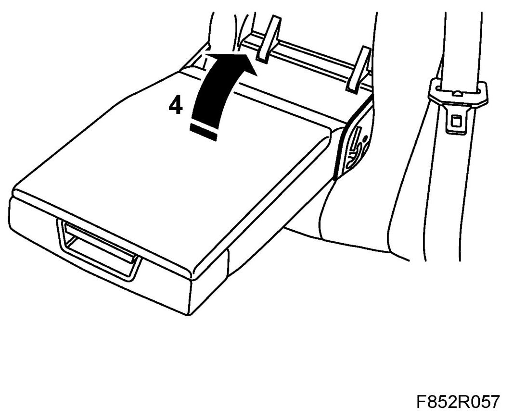

Armrest, Rear Seat
Armrest, Rear Seat
To remove
1. Remove the 40% backrest.
2. Lower the rear seat armrest.

3. Remove the cover from the outer armrest bracket.

4. Remove the bolts from the outer armrest bracket.
5. Raise the armrest to a 45 degrees angle. Raise the catch with a screwdriver. Remove the armrest outwards.

To fit
1. Fit the rear seat armrest by holding the armrest at an angle of roughly 45 degrees and guiding it into position.
2. Fit the bolts to the outer armrest bracket.

3. Fit the cover over the inner armrest bracket.
4. Raise the rear seat armrest.

5. Fit the 40% backrest.